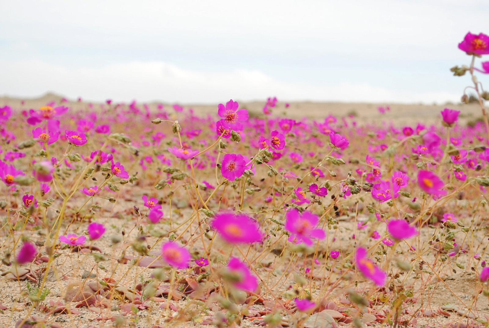
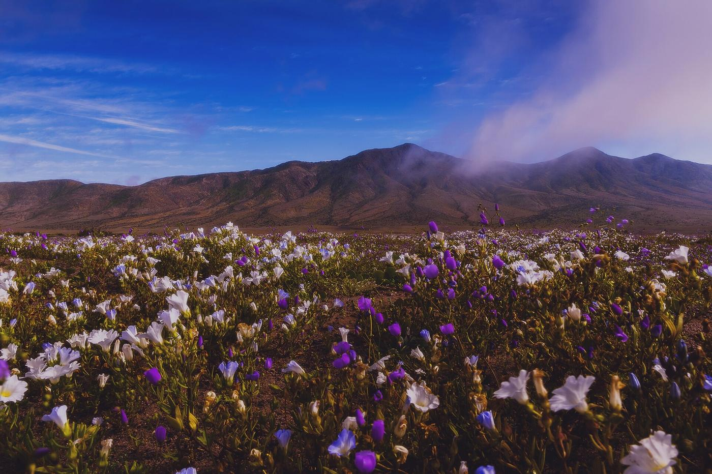
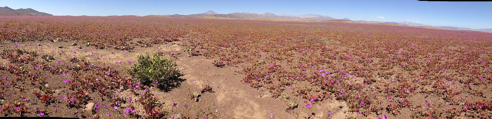

Pasaporte delDesierto Florido
Creado por Juanjo Juliá
41 flores para buscar entre Caldera, Copiapó, Vallenar y la costa de Huasco, cada una con foto, nombre común y nombre científico. Cuando encuentres una, séllala.
- +200
- especies de plantas brotan en un año de desierto florido
- 15 mm
- de lluvia en invierno bastan para despertarlo en la costa
- 15.000 km²
- de floración proyecta CONAF para esta temporada

Foto: Joselyn Anfossi Mardones · CC BY 2.0
Página de datos
Cada flor que encuentres, se sella.
Abre la ficha de una flor y toca La encontré. El pasaporte guarda la fecha y, si quieres, el lugar. Tus sellos quedan en este teléfono o computador; cada viajero lleva su propio pasaporte.
Puede que no haya señal en la costa ni en los parques. Abre esta página con señal antes de salir: las fotos se cargan solas.
Álbum de sellos
Las 41 flores
Están en tres grupos: bulbos y lirios, hierbas que forman las alfombras, y arbustos y cactus. Si tienes una flor enfrente, filtra por su color, abre la ficha y compara. Si es ella, séllala.
Ninguna flor coincide con esos filtros. Prueba quitando el color o la zona.
El fenómeno
Un desierto que espera la lluvia
Casi todos los años, el sur del desierto de Atacama se ve pelado. Bajo la superficie, en cambio, guarda un banco de semillas, bulbos y rizomas que puede esperar años. Cuando un invierno deja más de 15 mm de lluvia en la zona costera, ese banco despierta y brotan más de doscientas especies de plantas anuales y geófitas.
Florece sobre suelos arenosos de terrazas marinas, llanos y piedemontes bajo los 700 metros de altura. El sector clásico va de Totoral a Caleta Chañaral de Aceituno. La camanchaca, la neblina que entra desde el mar, alarga la floración en una franja de unos 10 km de ancho; el calor la acorta.
La lluvia no lo explica todo. También importan las horas de frío y el mes en que cae el agua: en 1997 llovió entre dos y tres veces más que en 1991 y la floración fue más débil. Además, no todo florece a la vez. Entre una especie y otra puede haber de 4 a 10 semanas de diferencia, así que en cada visita el paisaje cambia.
Con las flores llegan los animales. Un estudio de la Universidad de La Serena en Caldera, Huasco y Coquimbo registró más de 7.100 visitas de polinizadores a las flores, sobre todo abejas, seguidas de moscas, hormigas y escarabajos. También aparecen las vaquitas del desierto (escarabajos del género Gyriosomus), lagartijas, zorros chilla y guanacos.

- LlueveMás de 15 mm en la costa durante el invierno, entre junio y agosto.
- Despierta el bancoGermina solo una parte de las semillas. El resto se queda esperando la próxima lluvia.
- BrotaCerca de un mes después de la lluvia, las anuales y los bulbos ya dominan el suelo.
- FloreceEl 60 % de los eventos alcanza su máximo en septiembre u octubre.
- Vuelve a la tierraEn unas 19 semanas las plantas se secan y dejan semillas nuevas para el próximo año lluvioso.
Años con desierto florido
Entre 1981 y 2015 los satélites detectaron 13 desiertos floridos. Los más grandes fueron los de 1997, 2002 y 2011; el de 2011 cubrió 11.136 km² durante 180 días. Para 2026, CONAF proyecta hasta 15.000 km².
2026 sí es año de desierto florido, y puede ser uno de los más grandes
CONAF confirmó que el banco de semillas se activó en todo el territorio que monitorea y proyecta hasta 15.000 km² de floración, una superficie parecida a la de la Región Metropolitana. Se espera la mayor densidad de flores entre fines de septiembre y la segunda quincena de octubre, con floración posible hasta diciembre.
Actualizado el 29 de septiembre de 2026
Un temporal de sistemas frontales con un río atmosférico dejó 175,6 mm en Vallenar. Al 27 de septiembre la ciudad suma 200,3 mm, cuando lo normal a esa fecha son 38,7 mm. Caldera tuvo el julio más lluvioso desde 2005.
Boletín DGA, 28 sepCONAF confirmó la activación del banco de semillas en el 100 % del territorio considerado y proyectó hasta 15.000 km² de floración.
SernaturTras los daños del temporal en la provincia del Huasco, Sernatur estimaba que el 70 % de las rutas estaba transitable.
MaderoEl MOP habilitó cuatro rutas: Barranquilla y la costera C-10, Bahía Salada, Llanos de Challe por la C-440 y Carrizal Bajo, y Caleta Los Bronces por la C-46 y la C-480.
Vialidad MOPHubo denuncias de visitantes pisando flores para sacarse fotos. La campaña de CONAF de este año se llama «Observar sin intervenir».
CONAFSe esperan más de 230.000 visitantes. En Llanos de Challe los cupos son limitados: compra la entrada con anticipación.
MegatiempoSegún La Tercera, 2026 podría tener la floración más extensa desde 1997 y superar todos los registros.
La Tercera

Dónde buscar
La ruta de las flores
Diez sectores entre Caldera y Freirina, más dos extensiones hacia el norte y el sur. Tras el temporal de julio algunos caminos quedaron dañados: revisa su estado antes de salir.
Caldera, Bahía Inglesa y el aeropuerto
A 64 km de Copiapó por Ruta 5
Llanos costeros que este año brotaron temprano: en septiembre el entorno del aeropuerto Desierto de Atacama ya estaba cubierto de verde.
En Caldera está prohibido entrar con vehículos al desierto florido (Ordenanza 2942, multas de 3 a 5 UTM). Hay bencineras.
Abrir en Google Maps ↗Parque Nacional Desierto Florido
A unos 30 km al sur de Copiapó: Ruta 5 hasta el km 777 (cruce Nantoco) y luego la C-382
El parque nacional más nuevo de Atacama (2023): matorral de cuerno de cabra y llanos con pata de guanaco y añañuca amarilla.
Abre de martes a domingo, de 9:00 a 18:00. No tiene baños, estacionamientos ni senderos: lleva agua y circula solo por la C-382.
Abrir en Google Maps ↗Barranquilla y Bahía Salada
A 74 km (Barranquilla) y 88 km (Bahía Salada) de Copiapó, por Ruta 5 y la C-370 o la C-390
Costa sur de Caldera, destacada por CONAF y Sernatur para 2026. En 2010 hubo aquí alfombras blancas de flores.
Rutas 1 y 2 habilitadas por el MOP el 17 de septiembre.
Abrir en Google Maps ↗Totoral
A 117 km de Copiapó por Ruta 5 y la C-416; a 45 km de Carrizal Bajo por la costera
Límite norte del sector clásico del desierto florido, que según CONAF va de Totoral a Caleta Chañaral de Aceituno.
Se llena de visitantes en el peak. No hay bencinera.
Abrir en Google Maps ↗Ruta 5 entre Copiapó y Vallenar
147 km entre ambas ciudades
Llanos interiores de Travesía, Chehueque y la Quebrada de los Sapos, con patas de guanaco y añañucas.
No te detengas en la calzada, en curvas ni en bermas angostas. Atento a los guanacos que cruzan.
Abrir en Google Maps ↗Carrizal Bajo y Quebrada Carrizal
A unos 94 km de Vallenar por Ruta 5, la C-440 y Canto de Agua; 13 km al norte del acceso a Llanos de Challe
Flores costeras: añañucas, suspiros y lirios amarillos. En este sector crece la garra de león.
Ruta 3 del MOP (C-440, Carrizal Bajo y costera C-10). No hay bencinera.
Abrir en Google Maps ↗Ruta C-440 por Canto de Agua
Desvío de la Ruta 5 a 40 km al norte de Vallenar; luego 36 km de ripio hasta Carrizal Bajo
Llanos del interior camino a la costa. Es uno de los dos accesos a Llanos de Challe.
Camino de ripio. CONAF indica que no hace falta doble tracción.
Abrir en Google Maps ↗Parque Nacional Llanos de Challe
Desde Vallenar, 81 km por Huasco y la costera o 107 km por Ruta 5 y la C-440 (1 h 30 min). Desde Huasco, 40 km
El lugar clásico para buscar la garra de león y la Copiapoa dealbata. Tiene más de 220 especies de flora, guanacos y zorros.
Abre de martes a domingo, de 9:00 a 18:00. Entrada por Pases Parques con cédula: adulto chileno $5.000, extranjero $11.000, niños gratis. Hay baños, centro de interpretación y camping.
Abrir en Google Maps ↗Costa de Huasco y Tres Playitas
A 50 km de Vallenar por la C-46; desde Huasco, la costera sigue 40 km al norte hasta Llanos de Challe
Costa con camanchaca, donde la floración dura más. Es punto de educación ambiental del Gobierno Regional.
Al 17 de septiembre el MOP no incluía la costera C-470 entre las rutas habilitadas: confirma su estado antes de ir. Hay bencineras en Huasco.
Abrir en Google Maps ↗Freirina y Caleta Los Bronces
A 34 km de Vallenar (Freirina) y 74 km hasta Caleta Los Bronces por la C-46 y la C-480
Borde sur de la floración costera de 2026 y punto de educación ambiental.
Ruta 4 habilitada por el MOP. No hay bencinera en Freirina.
Abrir en Google Maps ↗Parque Nacional Pan de Azúcar
Fuera del mapa, al norte: 27 km desde Chañaral por la C-120
Cactus endémicos del género Copiapoa, guanacos y aves marinas. La floración de 2026 se proyecta hasta Chañaral.
Abre de martes a domingo, de 9:00 a 18:00. Adulto chileno $5.500.
Abrir en Google Maps ↗Caleta Chañaral de Aceituno
Fuera del mapa, al sur: Ruta 5 hasta Domeyko y 78 km de ripio por la C-500 (131 km desde Vallenar)
Extremo sur del sector clásico y puerta a la Reserva Nacional Pingüino de Humboldt.
Tramo largo sin bencineras.
Abrir en Google Maps ↗
Condiciones de uso · Pág. 46
Este pasaporte vale solo si las flores se quedan donde están
- Mira sin tocarNo cortes, no arranques ni pises flores. Tampoco saques semillas, bulbos ni piedras: las flores se llevan solo en fotos.
- El auto, solo por el caminoNo salgas de las rutas ni estaciones fuera de los lugares habilitados. En Caldera y Copiapó hay ordenanzas con multas de 3 a 5 UTM.
- A pie, por senderos y huellasFuera de ellos es fácil aplastar brotes y plantas pequeñas que todavía no florecen.
- Sin drones en los parquesEstán prohibidos en Llanos de Challe y en las áreas protegidas, salvo autorización.
- Sin fuego ni cigarrosEncender fuego en un área protegida es delito: de 61 días a 3 años de cárcel y multa de 11 a 50 UTM (art. 22 bis de la Ley de Bosques).
- Las mascotas se quedan en casaNo pueden entrar a los parques nacionales. Los perros están entre las amenazas para los guanacos.
- La basura vuelve contigoTodo lo que entra, sale. Y no alimentes a zorros ni guanacos.
- Si ves daños, avisaCONAF pide denunciar a Carabineros (133) o a la PDI (134).
En terreno
Antes de salir a buscar
Cuándo
OctubreLa mayor densidad de flores se espera entre fines de septiembre y la segunda quincena de octubre. Podría seguir hasta diciembre.
A qué hora
10:00–16:00Recorre entre media mañana y media tarde; con sol las flores suelen estar más abiertas. Los parques abren de martes a domingo, de 9:00 a 18:00.
Clima
8–23 °CEn Vallenar las máximas rondan los 21–23 °C y las mínimas los 8–9 °C. En la costa hace menos calor y hay camanchaca. Lleva capas.
Sol
UV extremoAtacama tiene una de las radiaciones ultravioleta más altas del planeta. Gorro, bloqueador y lentes, aunque esté nublado.
Bencina
Estanque llenoCarga en Copiapó, Caldera, Vallenar o Huasco. En Carrizal Bajo, Totoral, Canto de Agua y Freirina no hay bencineras registradas.
Caminos
4 rutas MOPMucho ripio, y la costera con bischofita se pone resbaladiza con humedad. Viaja de día y revisa el estado de las rutas antes de salir.
Señal
Sin coberturaPlanifica como si no hubiera señal en la costa ni en los parques. Descarga los mapas y abre este pasaporte antes de salir.
Llanos de Challe
$5.000Adulto chileno; extranjeros $11.000; niños gratis. Se compra en Pases Parques y los cupos son limitados. Lleva tu cédula.
Qué llevar
Agua de sobraRopa liviana y abrigo, calzado cerrado, prismáticos para la fauna y bolsas para tu basura.
Hospitales: Provincial del Huasco en Vallenar (51 233 1500), Regional de Copiapó (52 246 7007) y de Huasco (51 233 1200). CONAF Atacama: 52 221 3404.
Investigación
Fuentes y créditos
Esta guía se armó el 29 de septiembre de 2026 con fichas oficiales del Ministerio del Medio Ambiente y de CONAF, catálogos botánicos, guías de campo y prensa regional. Las fotos son de naturalistas de iNaturalist y Wikimedia Commons, publicadas con licencias Creative Commons: úsalas sin fines comerciales y citando a sus autores.
Fuentes consultadas
- Observar sin intervenir: Desierto Florido 2026. CONAF, 2026.
- Región de Atacama se prepara para una histórica temporada del Desierto Florido 2026. Sernatur, 1 de septiembre de 2026.
- Boletín hidrometeorológico semanal. Dirección General de Aguas, 28 de septiembre de 2026.
- El Clima Hoy. Dirección Meteorológica de Chile, 4 y 21 de agosto de 2026.
- MOP informa cuatro rutas habilitadas para visitar el desierto florido. Vialidad, 17 de septiembre de 2026.
- Atacama podría tener el desierto florido más extenso de la historia. La Tercera, 24 de septiembre de 2026.
- Chávez, R. O. et al. (2019). GIMMS NDVI time series reveal the extent, duration, and intensity of “blooming desert” events. Int. J. Appl. Earth Obs. Geoinf. 76: 193–203.
- Vidiella, P. E., Armesto, J. J. y Gutiérrez, J. R. (1999). Vegetation changes and sequential flowering after rain in the southern Atacama Desert. J. Arid Environ. 43: 449–458.
- Vidiella, P. (1992). Desierto florido: estudio experimental de la emergencia de plantas efímeras. Tesis, Universidad de Chile.
- Antecedentes de CONAF sobre el Desierto Florido y Llanos de Challe. Expediente de Sitios Prioritarios, Ministerio del Medio Ambiente.
- DS 12/2023, crea el Parque Nacional Desierto Florido. Ministerio de Bienes Nacionales.
- Squeo, F. A., Arancio, G. y Gutiérrez, J. R. (eds.) (2008). Libro Rojo de la Flora Nativa y de los Sitios Prioritarios para su Conservación: Región de Atacama. Ediciones Universidad de La Serena.
- Rodríguez, R. et al. (2018). Catálogo de las plantas vasculares de Chile. Gayana Botánica 75(1).
- Reglamento de Clasificación de Especies: nómina según estado de conservación. Ministerio del Medio Ambiente, actualizada en junio de 2026.
- Catálogo de flora de la Fundación R. A. Philippi y Chileflora.
- Parque Nacional Llanos de Challe: horarios y tarifas. Pases Parques, 2026.
- Ley 21.600, que crea el Servicio de Biodiversidad y Áreas Protegidas, y Ley de Bosques, art. 22 bis. Biblioteca del Congreso Nacional.
- Las lluvias despiertan el desierto florido y cambian las rutas de abejas y otros polinizadores. Meteored, 1 de septiembre de 2026.
- Observaciones de flora de la Región de Atacama. iNaturalist.
Fotografías
- Garra de león: Eitel Carlos Thielemann Pinto · CC BY-NC · iNaturalist
- Añañuca amarilla: Carlos E. Valdivia · CC BY-NC · iNaturalist
- Añañuca roja: Francisco Riquelme Tapia · CC BY-NC · iNaturalist
- Huilli: Carlos E. Valdivia · CC BY-NC · iNaturalist
- Cebollín: Juan Mauricio Contreras · CC BY-NC · iNaturalist
- Celestina: Jardín Botánico Nacional, Viña del Mar, Chile · CC BY-NC-SA · iNaturalist
- Azulillo: Vanesa Fernández · CC BY-NC-SA · iNaturalist
- Lágrima de la Virgen: Bastian Riveros Flores · CC BY-NC · iNaturalist
- Lirio del campo: laslilas · CC BY-NC · iNaturalist
- Lirio del campo (lila): Nicolás Villaseca Merino · CC BY-SA · iNaturalist
- Lirio amarillo: James Bailey · CC BY-NC · iNaturalist
- Lirio de campo (de duna): Pilar Molina Albornoz · CC BY-NC · iNaturalist
- Conanthera urceolata: Juan Pablo Madriaga Núñez · CC BY-SA · iNaturalist
- Pata de guanaco: Nicolás Lavandero · CC BY · iNaturalist
- Suspiro de campo blanco: Nico · CC BY-NC · iNaturalist
- Suspiro: Miguel A. Casado · CC BY-NC · iNaturalist
- Malvilla: Nicolás Villaseca Merino · CC BY-SA · iNaturalist
- Terciopelo: Eitel Carlos Thielemann Pinto · CC BY-NC · iNaturalist
- Oreja de zorro: Sophia Winitsky · CC BY-NC · iNaturalist
- Don Diego de la noche: Álvaro Parra Valdivia · CC BY · iNaturalist
- Mariposita blanca: Ricardo Catalán Garrido · CC BY-NC · iNaturalist
- Buenas noches: Ben Lyle Bedard · CC BY · iNaturalist
- Borlón de alforja: Eitel Carlos Thielemann Pinto · CC BY-NC · iNaturalist
- Ortiga blanca: aacocucci · CC BY · iNaturalist
- Violeta de campo: Eitel Carlos Thielemann Pinto · CC BY-NC · iNaturalist
- Rosita: Diego Almendras · CC BY-NC · iNaturalist
- Rosita de campo: Javiera Moreno Guerrero · CC BY-NC · iNaturalist
- Chinita: juampa_caceres · CC BY-NC · iNaturalist
- Cristaria calderana: Nodora L. Moyano · CC BY-NC · iNaturalist
- Coronilla del fraile: Nicolás Lavandero · CC BY · iNaturalist
- Cuerno de cabra: Nicolás Villaseca Merino · CC BY-SA · iNaturalist
- Churqui: Cesar Ormazabal · CC BY · iNaturalist
- Algarrobilla: laslilas · CC BY-NC · iNaturalist
- Retamo: laslilas · CC BY-NC · iNaturalist
- Pacul: Nicolás Villaseca Merino · CC BY-SA · iNaturalist
- Carbonillo: Josefa Araya Campano · CC BY-NC · iNaturalist
- Palo negro: Altair.rana :P · CC BY-NC · iNaturalist
- Tupa: Fabián Nieto · CC BY · iNaturalist
- Copiapoa de Carrizal: cesaredpr · CC BY-NC · iNaturalist
- Copao: Lea Israel Omerovic · CC BY-NC · iNaturalist
- Quintral del quisco: mthiel · CC BY-NC · iNaturalist
- Portada: Joselyn Anfossi Mardones (Desierto florido, 2010) · CC BY 2.0 · Wikimedia Commons
- El fenómeno: Chang Hyon Lee (Desierto Florido, 2017) · CC BY-SA 4.0 · Wikimedia Commons
- Panorámica: Pato Novoa (Desierto florido, 2015) · CC BY 2.0 · Wikimedia Commons